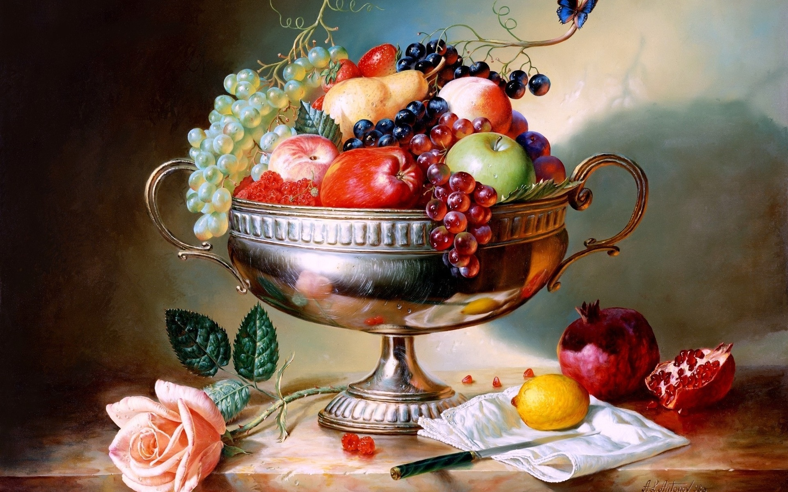

I really appreciate how Berger highlighted the effects of music in television and film. I laughed a lot watching the dramatic music from an Italian opera play while the camera zoomed in on people in Caravaggio’s painting. It reminded me of videos I’ve seen in recent years on social media, which goes to show how even when the world changes drastically over half a century, humor doesn’t have to.
I never thought about how paintings of fruit or animals could represent a person’s wealth. But it makes sense if the portraits of people featured them in stances that mimicked animals. These people seeking paintings likely had a specific image in mind of what would communicate their riches and made everything in their paintings follow/fulfill this formula. I’m not surprised the pose involves them staring ahead with a serious, confident, even snooty expression and surrounded by fancy furniture and dressed in lavish clothes. This is likely the only way they (rich people of this time) could imagine exuding power despite there being a number of ways to communicate this. With this, I liked seeing Manet’s Dejeuner Sur L’Herbe painting as it was more casual and showed a certain goofiness (though I didn’t appreciate only the woman being naked).
Berger’s quote that glamour is “perhaps more accurately, for everybody who finds that they cannot afford not to be glamorous” stuck out to me. I was instantly reminded of how social media has now allowed people to make money off of solely their looks (which often fulfill Eurocentric standards but also involve surgeries to keep up with trends). I imagine these people feel a certain expectation to constantly be on top of trends or setting new ones and look presentable (whatever that means to them) because they’ve created a brand out of their appearance and therefore always have to sell that. It’s ironic that this scene in the video was set in nature, because nature is known for its “natural beauty” that doesn’t involve changes or refinement like the group of people I mentioned.
It was really enjoyable hearing Berger’s claims and seeing how they stand today. For example, him calling status “theoretically open to everyone but enjoyed by only a few” isn’t really accurate more when again, people can become famous off of social media and notoriety is much more accessible.
